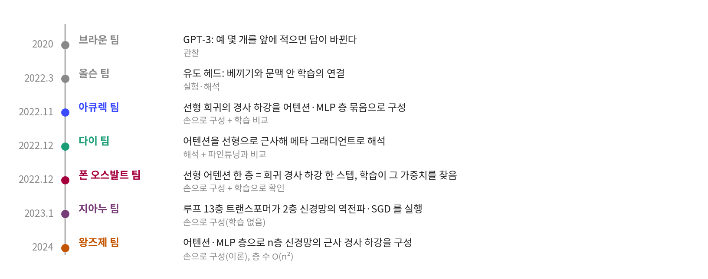
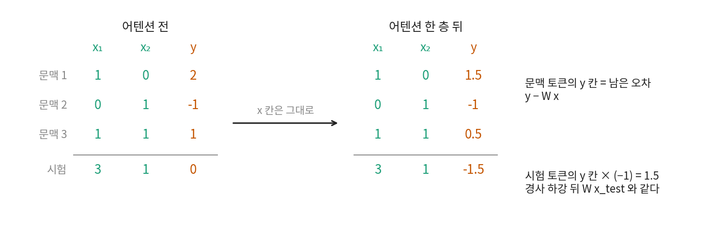

문맥 안의 학습: 파라미터는 그대로인데 배운 것처럼 보이는 일
어텐션 한 층이 경사 하강 한 스텝이 되는 구성
규칙 적용 안에 무슨 계산이 있는지 GPT-2 에서 바로 알아내기는 어려워서, 연구자들은 태스크를 가장 작게 줄여 물었다. 입력과 정답이 숫자인 선형 회귀라면 어텐션이 그 안에서 무엇을 계산할까?
역사: 2022년 겨울에 나온 논문 세 편
2020년 GPT-3 논문(브라운 팀, 「Language Models are Few-Shot Learners」)이 보기 몇 개를 앞에 적는 것만으로 여러 태스크를 푸는 모델을 보여 준 뒤로, 왜 그렇게 되는지가 물음으로 남았다. 올슨 팀(2022년 3월)이 유도 헤드에서 답을 찾은 뒤, 2022년 겨울에는 트랜스포머가 문맥을 읽는 동안 작은 학습 알고리즘을 돌린다는 다른 가설을 내세운 논문이 잇달아 나왔다.

11월에 나온 에킨 아큐렉(Ekin Akyürek) 팀의 「What learning algorithm is in-context learning?」(ICLR 2023)은 선형 회귀의 경사 하강과 릿지 회귀를 트랜스포머 층으로 구성할 수 있음을 증명하고, 학습한 모델의 예측이 그 알고리즘들과 가깝다고 보고했다. 12월의 다이다마이(Damai Dai) 팀의 「Why Can GPT Learn In-Context?」는 어텐션에서 소프트맥스를 뺀 근사 아래에서 어텐션을 메타 그래디언트(문맥에서 계산한, 파라미터 변화에 해당하는 값)의 적용으로 해석하고, 여섯 가지 분류 태스크에서 문맥 안 학습과 실제 파인튜닝의 행동을 비교했다. 같은 달 나온 요하네스 폰 오스발트(Johannes von Oswald) 팀의 「Transformers Learn In-Context by Gradient Descent」(ICML 2023)는 가장 단순한 구성을 내놓았다. 어텐션에서 소프트맥스를 뺀 선형 셀프 어텐션 (linear self-attention) 한 층의 가중치를 어떤 값으로 놓으면, 그 층의 계산이 회귀 손실의 경사 하강 한 스텝과 같아진다. 그들은 여기서 멈추지 않고 트랜스포머를 학습시켜 그 가중치가 실제로 나오는지 확인했다. 우리는 이 논문을 따라 해 본다.
점 세 개로 손 계산
입력 2차원, 점 세 개의 선형 회귀를 생각한다. 참 규칙은 y = 2x₁ − x₂ 이고, 점은 (1, 0)→2, (0, 1)→−1, (1, 1)→1 이다. 모델은 ŷ = W x 하나이고 처음 W 는 0 이다.
W = 0, 학습률 0.5 로 한 스텝을 가면 W = (0.5/3) · [2·(1, 0) + (−1)·(0, 1) + 1·(1, 1)] = (0.5/3) · (3, 0) = (0.5, 0) 이다. 시험 입력 (3, 1) 의 예측은 1.5 이고, 문맥의 세 점에 남은 오차 y − W x 는 1.5, −1, 0.5 다.
가중치 대신 데이터를 고치기
폰 오스발트 팀의 관찰은 한 줄이다. 가중치 W 를 들고 다니지 않아도, 정답 칸을 y → y − W x 로 고쳐 두면 경사 하강을 잇는 데 필요한 것이 모두 데이터에 남는다. W 가 하던 기억을 잔차 스트림의 y 칸이 맡는 것이다. 그러면 토큰 하나를 h = (x, y) 로 놓고 모든 토큰의 y 칸만 함께 고치는 계산이 경사 하강이 되고, 시험 토큰은 (xtest, 0) 으로 넣어 y 칸에 쌓인 값의 부호를 뒤집어 답으로 읽는다.

선형 셀프 어텐션은 쿼리와 키의 내적을 소프트맥스 없이 그대로 값에 곱한다. 내적을 확률로 정규화하지 않는다는 점이 GPT 의 어텐션과 다르고, 이 절의 구성에는 MLP 와 층 정규화도 없다.
논문의 명제 1 이 놓는 가중치는 다음과 같다. 키와 쿼리는 x 칸만 남기고 y 칸을 지우므로 둘의 내적이 xi 와 xj 의 내적이 되고, 값은 x 칸을 버리고 W₀ x − y 를 내보내며, P 는 학습률을 곱한다.
이렇게 놓고 어텐션 식을 풀면 y 칸의 업데이트만 남는다.
값 벡터가 오차 W₀ xi − yi 를 내고 키와 쿼리의 내적이 xiᵀ xj 를 내므로, 두 값의 곱을 문맥 전체로 더하면 경사 하강 식의 그래디언트 항에 xj 를 곱한 값이 된다. 점 세 개의 예를 넣어 맞춰 보자(sources/in-context/lsa_gd.py).
# sources/in-context/lsa_gd.py 에서 (발췌)
def lsa_layer(e, W_Q, W_K, W_V, P, n_ctx):
ctx = e[:n_ctx]
V = ctx @ W_V.T # 각 행이 v_i
K = ctx @ W_K.T # 각 행이 k_i
q = e @ W_Q.T # 각 행이 q_j
return e + (q @ K.T @ V) @ P.T # e_j <- e_j + P V K^T q_j
토큰(갱신 전, 마지막 줄이 시험 토큰)
tensor([[ 1., 0., 2.],
[ 0., 1., -1.],
[ 1., 1., 1.],
[ 3., 1., 0.]])
토큰(어텐션 한 층 뒤)
tensor([[ 1.0000, 0.0000, 1.5000],
[ 0.0000, 1.0000, -1.0000],
[ 1.0000, 1.0000, 0.5000],
[ 3.0000, 1.0000, -1.5000]])
경사 하강 한 스텝의 W = tensor([[0.5000, 0.0000]])
경사 하강의 예측 W x_test = 1.5
어텐션의 예측 -e_test[y] = 1.5
문맥 토큰 y 칸 = y_j - W x_j 인가: [1.5, -1.0, 0.5] / [1.5, -1.0, 0.5]
손 계산과 같다. 층을 쌓으면 스텝을 잇는 것과 같은지 무작위 태스크 1,000 개에서 예측의 차이를 재면 64비트 부동소수점의 반올림 오차 크기가 나오고, 입력을 줄이고 출력을 3차원으로 늘리거나 처음 가중치를 0 이 아닌 무작위 값으로 놓아도 크기는 같았다.
Nx Ny N W0 eta K | 최대 |어텐션 - 경사 하강|
10 1 10 0 0.3 1 | 2.220e-16
10 1 10 0 0.3 2 | 4.441e-16
10 1 10 0 0.3 5 | 8.882e-16
10 1 10 0 0.3 20 | 1.776e-15
10 1 10 무작위 0.3 1 | 1.776e-15
10 1 10 무작위 0.3 2 | 1.332e-15
10 1 10 무작위 0.3 5 | 1.332e-15
10 1 10 무작위 0.3 20 | 2.665e-15
…
5 3 8 무작위 0.3 1 | 1.332e-15
5 3 8 무작위 0.3 2 | 8.882e-16
5 3 8 무작위 0.3 5 | 9.992e-16
5 3 8 무작위 0.3 20 | 2.220e-15

20 층을 쌓아도 차이가 10 의 −15 승이네. 비슷한 게 아니고 같은 계산이야.

잠깐, 시험 토큰을 키랑 값에서 뺐잖아. 우리 GPT 는 그런 거 안 해.
문제 2. 시험 토큰을 키와 값에 넣으면
위 구성은 시험 토큰을 키·값에서 뺐다. 보통의 셀프 어텐션처럼 시험 토큰도 넣고 W₀ = 0 으로 재면 경사 하강과의 차이는 아래와 같다. (가) 왜 한 층에서는 차이가 없는가? (나) 왜 둘째 층부터 차이가 생기는가? (다) 트랜스포머가 정말 경사 하강을 한다고 말하려면 아래 표의 차이를 어떻게 다뤄야 할까?
K | 최대 차이 | 평균 차이
1 | 2.220e-16 | 3.450e-17
2 | 1.727e-01 | 1.971e-02
5 | 7.733e-01 | 1.290e-01
20 | 2.805e+00 | 5.328e-01

일단 한 층부터 넣어 볼게. 시험 토큰의 키·값이 더해지는 항은 값이 W₀ x − y 니까…

W₀ 는 0 이고 시험 토큰의 y 도 처음엔 0 이야. 값이 0 벡터네.

그래서 더해지는 항이 0 이고, 첫 층은 빼나 넣으나 같아. 그런데 첫 층이 지나면 시험 토큰의 y 칸이 −ΔW xtest(Δ 는 델타, 한 스텝의 변화)로 바뀌니까, 둘째 층부터는 값이 0 이 아니야.

그러면 둘째 층에서 시험 토큰은 무엇처럼 행동하나요?

음, 문맥 토큰의 y 칸은 y − W x 잖아요. 시험 토큰의 y 칸은 −W x 니까… 정답 자리에 0 이 적힌 문맥 점이랑 모양이 같은데요.
정답이 0 인 가짜 점이 하나 더 있는 셈이네. 그럼 W 가 시험 입력 쪽에서는 예측을 0 으로 끌어당기겠다.
재 보면 되지요. 가짜 점 (xtest, 0) 을 더한 경사 하강과 비교했어요.
K | 최대 |어텐션 - 가짜 점 경사 하강|
1 | 2.220e-16
2 | 4.441e-16
5 | 6.661e-16
20 | 1.554e-15

또 10 의 −15 승. 시험 토큰을 넣은 어텐션은 가짜 점까지 학습하는 경사 하강이랑 같은 계산이네요.
논문은 처음 가중치가 0 에 가까우면 한 스텝의 변화 ΔW 가 시험 토큰과 상관없어지니 시험 토큰을 빼는 조건을 내려놓아도 된다고 적었어요. 우리 측정으로도 한 층의 차이는 반올림 오차 크기예요. 다만 20 층에서는 평균 0.53 이에요. 그러니 (다)는요?
같은 계산이라는 말은 시험 토큰을 뺐을 때까지만 할 수 있어요. 넣으면 층이 깊을수록 벌어지니까, 얼마나 벌어지는지까지 재어서 적어야 하고요.